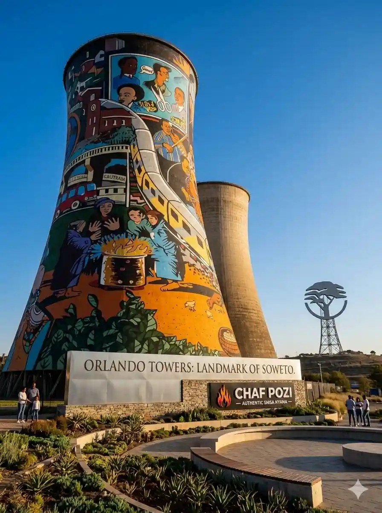

Taste eKasi. Made with Mzanzi Magic.
New to Mzanzi? We've got you. Every spot is local-approved with english menus explained, spice levels marked, and safety notes included. No guesswork, just good food.
>Eat Without Fear
We tell you what it is, how spicy, and how to order. No awkward pointing.
>Real Local Gems
From township braais to Cape Winelands cafes. Vetted by South Africans.
>Cultural Context
Know the story behind pap en vleis, magwinya, and why we share a shisanyama.
Photo Gallery
Born in Mzanzi, served for everyone.
Explore Places